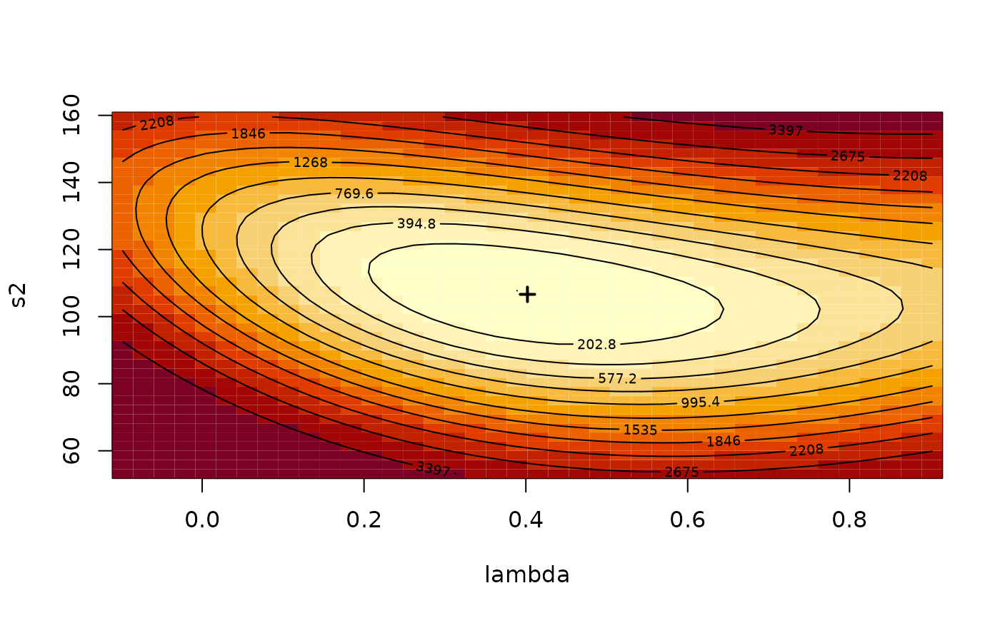

GMerrorsar.RdAn implementation of Kelejian and Prucha's generalised moments estimator for the autoregressive parameter in a spatial model.
GMerrorsar(formula, data = list(), listw, na.action = na.fail, zero.policy = NULL, method="nlminb", arnoldWied=FALSE, control = list(), pars, scaleU=FALSE, verbose=NULL, legacy=FALSE, se.lambda=TRUE, returnHcov=FALSE, pWOrder=250, tol.Hcov=1.0e-10) # S3 method for Gmsar summary(object, correlation = FALSE, Hausman=FALSE, ...) GMargminImage(obj, lambdaseq, s2seq)
| formula | a symbolic description of the model to be fit. The details
of model specification are given for |
|---|---|
| data | an optional data frame containing the variables in the model. By default the variables are taken from the environment which the function is called. |
| listw | a |
| na.action | a function (default |
| zero.policy | default NULL, use global option value; if TRUE assign zero to the lagged value of zones without
neighbours, if FALSE (default) assign NA - causing |
| method | default |
| arnoldWied | default FALSE |
| control | A list of control parameters. See details in |
| pars | starting values for \(\lambda\) and \(\sigma^2\) for GMM optimisation, if missing (default), approximated from initial OLS model as the autocorrelation coefficient corrected for weights style and model sigma squared |
| scaleU | Default FALSE: scale the OLS residuals before computing the moment matrices; only used if the |
| verbose | default NULL, use global option value; if TRUE, reports function values during optimization. |
| legacy | default FALSE - compute using the unfiltered values of the response and right hand side variables; if TRUE - compute the fitted value and residuals from the spatially filtered model using the spatial error parameter |
| se.lambda | default TRUE, use the analytical method described in http://econweb.umd.edu/~prucha/STATPROG/OLS/desols.pdf |
| returnHcov | default FALSE, return the Vo matrix for a spatial Hausman test |
| tol.Hcov | the tolerance for computing the Vo matrix (default=1.0e-10) |
| pWOrder | default 250, if returnHcov=TRUE, pass this order to |
| object, obj |
|
| correlation | logical; (default=FALSE), TRUE not available |
| Hausman | if TRUE, the results of the Hausman test for error models are reported |
| ... |
|
| lambdaseq | if given, an increasing sequence of lambda values for gridding |
| s2seq | if given, an increasing sequence of sigma squared values for gridding |
When the control list is set with care, the function will converge to values close to the ML estimator without requiring computation of the Jacobian, the most resource-intensive part of ML estimation.
Note that the fitted() function for the output object assumes that the response variable may be reconstructed as the sum of the trend, the signal, and the noise (residuals). Since the values of the response variable are known, their spatial lags are used to calculate signal components (Cressie 1993, p. 564). This differs from other software, including GeoDa, which does not use knowledge of the response variable in making predictions for the fitting data.
The GMargminImage may be used to visualize the shape of the surface of the argmin function used to find lambda.
A list object of class Gmsar
"ERROR"
simultaneous autoregressive error coefficient
GMM coefficient estimates
GMM coefficient standard errors
GMM residual variance
sum of squared GMM errors
number of parameters estimated
the lm object returned when estimating for \(\lambda=0\)
the call used to create this object
GMM residuals
the lm object returned for the GMM fit
Difference between residuals and response variable
model formula
if not NULL, details of aliased variables
zero.policy for this model
list of internal bigG and litg components for testing optimisation surface
object returned by optimizer
start parameter values for optimisation
Spatial DGP covariance matrix for Hausman test if available
input choice of unfiltered or filtered values
value computed if input argument TRUE
were Arnold-Wied moments used
GM argmin sigma squared
input choice of scaled OLS residuals
variance-covariance matrix of regression coefficients
(possibly) named vector of excluded or omitted observations if non-default na.action argument used
Kelejian, H. H., and Prucha, I. R., 1999. A Generalized Moments Estimator for the Autoregressive Parameter in a Spatial Model. International Economic Review, 40, pp. 509--533; Cressie, N. A. C. 1993 Statistics for spatial data, Wiley, New York.
Roger Bivand, Gianfranco Piras (2015). Comparing Implementations of Estimation Methods for Spatial Econometrics. Journal of Statistical Software, 63(18), 1-36. https://www.jstatsoft.org/v63/i18/.
Luc Anselin and Roger Bivand
#require("spdep", quietly=TRUE) data(oldcol, package="spdep") COL.errW.eig <- errorsarlm(CRIME ~ INC + HOVAL, data=COL.OLD, spdep::nb2listw(COL.nb, style="W"), method="eigen") (x <- summary(COL.errW.eig, Hausman=TRUE))#> #> Call: #> errorsarlm(formula = CRIME ~ INC + HOVAL, data = COL.OLD, listw = spdep::nb2listw(COL.nb, #> style = "W"), method = "eigen") #> #> Residuals: #> Min 1Q Median 3Q Max #> -34.81174 -6.44031 -0.72142 7.61476 23.33626 #> #> Type: error #> Coefficients: (asymptotic standard errors) #> Estimate Std. Error z value Pr(>|z|) #> (Intercept) 59.893219 5.366163 11.1613 < 2.2e-16 #> INC -0.941312 0.330569 -2.8476 0.0044057 #> HOVAL -0.302250 0.090476 -3.3407 0.0008358 #> #> Lambda: 0.56179, LR test value: 7.9935, p-value: 0.0046945 #> Asymptotic standard error: 0.13387 #> z-value: 4.1966, p-value: 2.7098e-05 #> Wald statistic: 17.611, p-value: 2.7098e-05 #> #> Log likelihood: -183.3805 for error model #> ML residual variance (sigma squared): 95.575, (sigma: 9.7762) #> Number of observations: 49 #> Number of parameters estimated: 5 #> AIC: 376.76, (AIC for lm: 382.75) #> Hausman test: 4.902, df: 3, p-value: 0.17911 #>#> Estimate Std. Error z value Pr(>|z|) #> (Intercept) 59.8932192 5.36616252 11.161276 0.0000000000 #> INC -0.9413120 0.33056857 -2.847554 0.0044056569 #> HOVAL -0.3022502 0.09047605 -3.340665 0.0008357788COL.errW.GM <- GMerrorsar(CRIME ~ INC + HOVAL, data=COL.OLD, spdep::nb2listw(COL.nb, style="W"), returnHcov=TRUE) (x <- summary(COL.errW.GM, Hausman=TRUE))#> #> Call: #> GMerrorsar(formula = CRIME ~ INC + HOVAL, data = COL.OLD, listw = spdep::nb2listw(COL.nb, #> style = "W"), returnHcov = TRUE) #> #> Residuals: #> Min 1Q Median 3Q Max #> -30.5432 -6.5553 -2.1921 10.0553 28.7497 #> #> Type: GM SAR estimator #> Coefficients: (GM standard errors) #> Estimate Std. Error z value Pr(>|z|) #> (Intercept) 62.513752 5.121339 12.207 < 2.2e-16 #> INC -1.128283 0.339745 -3.321 0.000897 #> HOVAL -0.296957 0.095699 -3.103 0.001915 #> #> Lambda: 0.40196 (standard error): 0.42334 (z-value): 0.94948 #> Residual variance (sigma squared): 106.64, (sigma: 10.327) #> GM argmin sigma squared: 106.36 #> Number of observations: 49 #> Number of parameters estimated: 5 #> Hausman test: 6.6406, df: 3, p-value: 0.08428 #>#> Estimate Std. Error z value Pr(>|z|) #> (Intercept) 62.5137525 5.12133863 12.206526 0.0000000000 #> INC -1.1282834 0.33974492 -3.320972 0.0008970455 #> HOVAL -0.2969573 0.09569889 -3.103038 0.0019154486aa <- GMargminImage(COL.errW.GM) levs <- quantile(aa$z, seq(0, 1, 1/12)) image(aa, breaks=levs, xlab="lambda", ylab="s2")COL.errW.GM1 <- GMerrorsar(CRIME ~ INC + HOVAL, data=COL.OLD, spdep::nb2listw(COL.nb, style="W")) summary(COL.errW.GM1)#> #> Call: #> GMerrorsar(formula = CRIME ~ INC + HOVAL, data = COL.OLD, listw = spdep::nb2listw(COL.nb, #> style = "W")) #> #> Residuals: #> Min 1Q Median 3Q Max #> -30.5432 -6.5553 -2.1921 10.0553 28.7497 #> #> Type: GM SAR estimator #> Coefficients: (GM standard errors) #> Estimate Std. Error z value Pr(>|z|) #> (Intercept) 62.513752 5.121339 12.207 < 2.2e-16 #> INC -1.128283 0.339745 -3.321 0.000897 #> HOVAL -0.296957 0.095699 -3.103 0.001915 #> #> Lambda: 0.40196 (standard error): 0.42334 (z-value): 0.94948 #> Residual variance (sigma squared): 106.64, (sigma: 10.327) #> GM argmin sigma squared: 106.36 #> Number of observations: 49 #> Number of parameters estimated: 5 #>#>nydata <- st_read(system.file("shapes/NY8_bna_utm18.gpkg", package="spData")[1], quiet=TRUE) suppressMessages(nyadjmat <- as.matrix(foreign::read.dbf(system.file( "misc/nyadjwts.dbf", package="spData")[1])[-1])) suppressMessages(ID <- as.character(names(foreign::read.dbf(system.file( "misc/nyadjwts.dbf", package="spData")[1]))[-1])) identical(substring(ID, 2, 10), substring(as.character(nydata$AREAKEY), 2, 10))#> [1] TRUEnyadjlw <- spdep::mat2listw(nyadjmat, as.character(nydata$AREAKEY)) listw_NY <- spdep::nb2listw(nyadjlw$neighbours, style="B") esar1f <- spautolm(Z ~ PEXPOSURE + PCTAGE65P + PCTOWNHOME, data=nydata, listw=listw_NY, family="SAR", method="eigen") summary(esar1f)#> #> Call: #> spautolm(formula = Z ~ PEXPOSURE + PCTAGE65P + PCTOWNHOME, data = nydata, #> listw = listw_NY, family = "SAR", method = "eigen") #> #> Residuals: #> Min 1Q Median 3Q Max #> -1.56754 -0.38239 -0.02643 0.33109 4.01219 #> #> Coefficients: #> Estimate Std. Error z value Pr(>|z|) #> (Intercept) -0.618193 0.176784 -3.4969 0.0004707 #> PEXPOSURE 0.071014 0.042051 1.6888 0.0912635 #> PCTAGE65P 3.754200 0.624722 6.0094 1.862e-09 #> PCTOWNHOME -0.419890 0.191329 -2.1946 0.0281930 #> #> Lambda: 0.040487 LR test value: 5.2438 p-value: 0.022026 #> Numerical Hessian standard error of lambda: 0.017209 #> #> Log likelihood: -276.1069 #> ML residual variance (sigma squared): 0.41388, (sigma: 0.64333) #> Number of observations: 281 #> Number of parameters estimated: 6 #> AIC: 564.21 #>esar1gm <- GMerrorsar(Z ~ PEXPOSURE + PCTAGE65P + PCTOWNHOME, data=nydata, listw=listw_NY) summary(esar1gm)#> #> Call:GMerrorsar(formula = Z ~ PEXPOSURE + PCTAGE65P + PCTOWNHOME, #> data = nydata, listw = listw_NY) #> #> Residuals: #> Min 1Q Median 3Q Max #> -1.641411 -0.396370 -0.026618 0.341740 4.204264 #> #> Type: GM SAR estimator #> Coefficients: (GM standard errors) #> Estimate Std. Error z value Pr(>|z|) #> (Intercept) -0.604364 0.174576 -3.4619 0.0005364 #> PEXPOSURE 0.067902 0.041164 1.6496 0.0990337 #> PCTAGE65P 3.775308 0.622965 6.0602 1.359e-09 #> PCTOWNHOME -0.437545 0.188906 -2.3162 0.0205468 #> #> Lambda: 0.03605 (standard error): 0.2022 (z-value): 0.17829 #> Residual variance (sigma squared): 0.41585, (sigma: 0.64487) #> GM argmin sigma squared: 0.45141 #> Number of observations: 281 #> Number of parameters estimated: 6 #>esar1gm1 <- GMerrorsar(Z ~ PEXPOSURE + PCTAGE65P + PCTOWNHOME, data=nydata, listw=listw_NY, method="Nelder-Mead") summary(esar1gm1)#> #> Call:GMerrorsar(formula = Z ~ PEXPOSURE + PCTAGE65P + PCTOWNHOME, #> data = nydata, listw = listw_NY, method = "Nelder-Mead") #> #> Residuals: #> Min 1Q Median 3Q Max #> -1.641390 -0.396374 -0.026616 0.341745 4.204277 #> #> Type: GM SAR estimator #> Coefficients: (GM standard errors) #> Estimate Std. Error z value Pr(>|z|) #> (Intercept) -0.604384 0.174580 -3.4619 0.0005363 #> PEXPOSURE 0.067907 0.041165 1.6496 0.0990225 #> PCTAGE65P 3.775275 0.622969 6.0601 1.36e-09 #> PCTOWNHOME -0.437518 0.188910 -2.3160 0.0205572 #> #> Lambda: 0.036057 (standard error): 0.20221 (z-value): 0.17832 #> Residual variance (sigma squared): 0.41585, (sigma: 0.64487) #> GM argmin sigma squared: 0.45139 #> Number of observations: 281 #> Number of parameters estimated: 6 #>